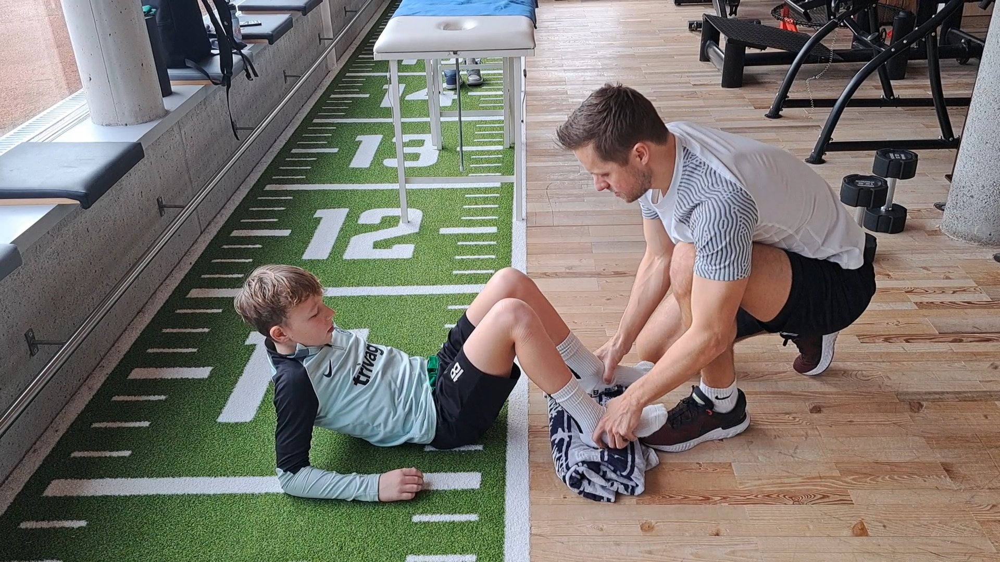
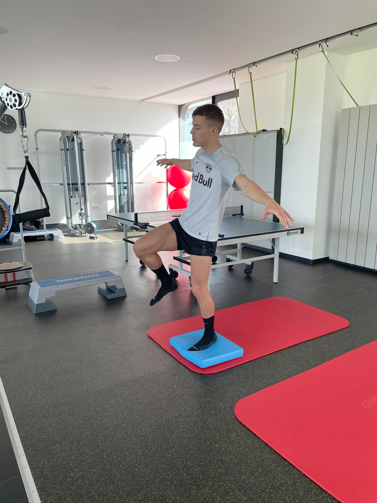
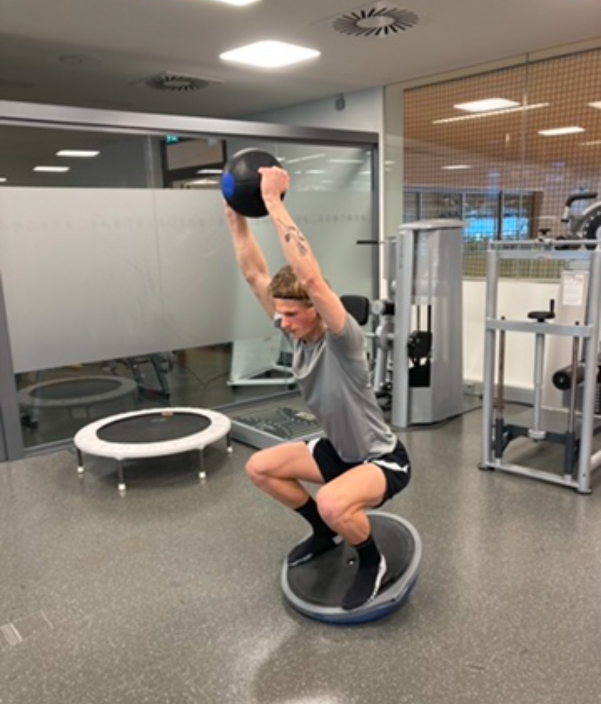
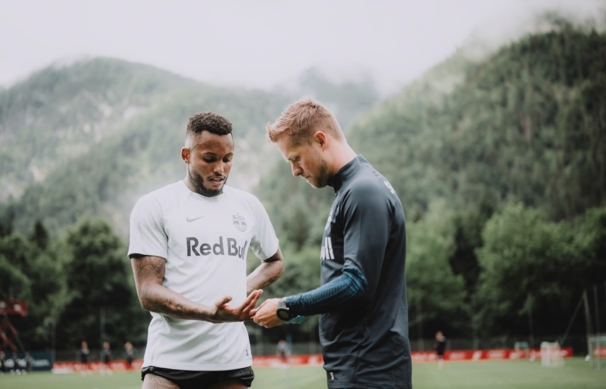
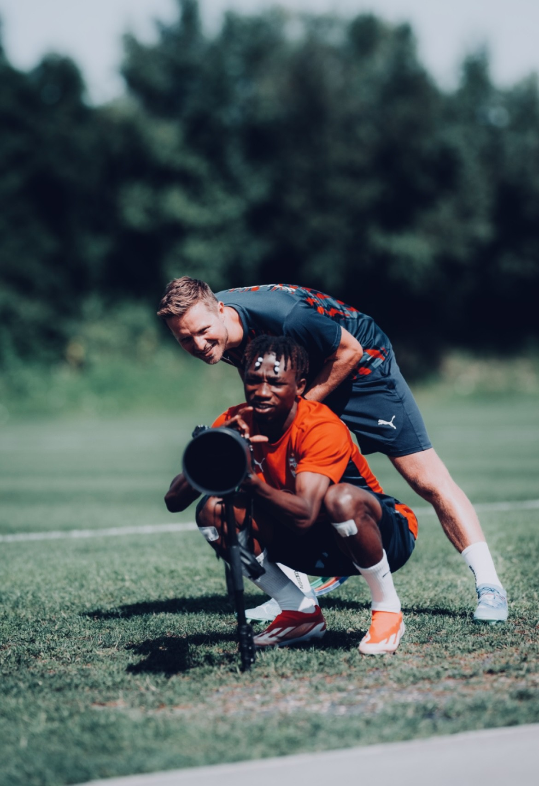
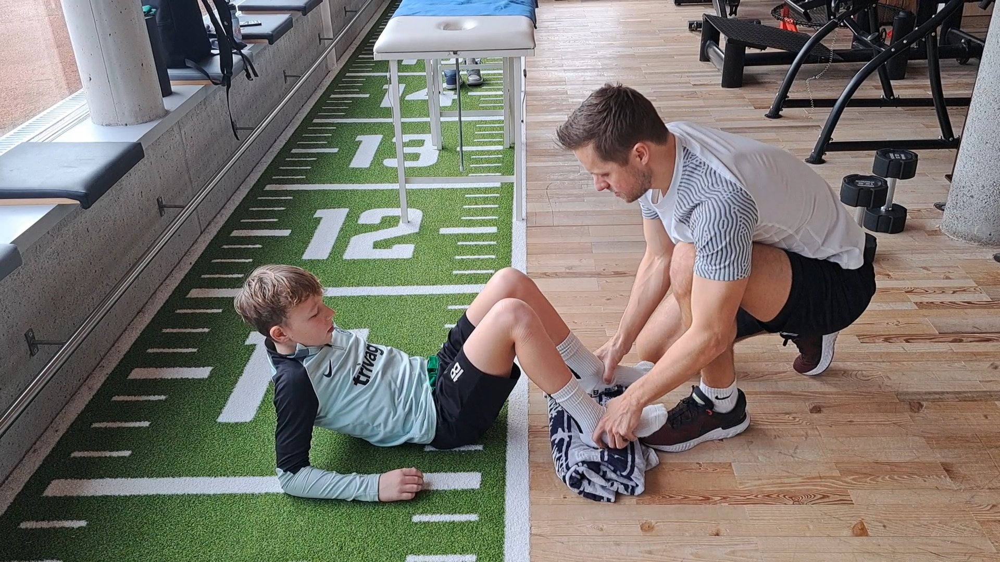
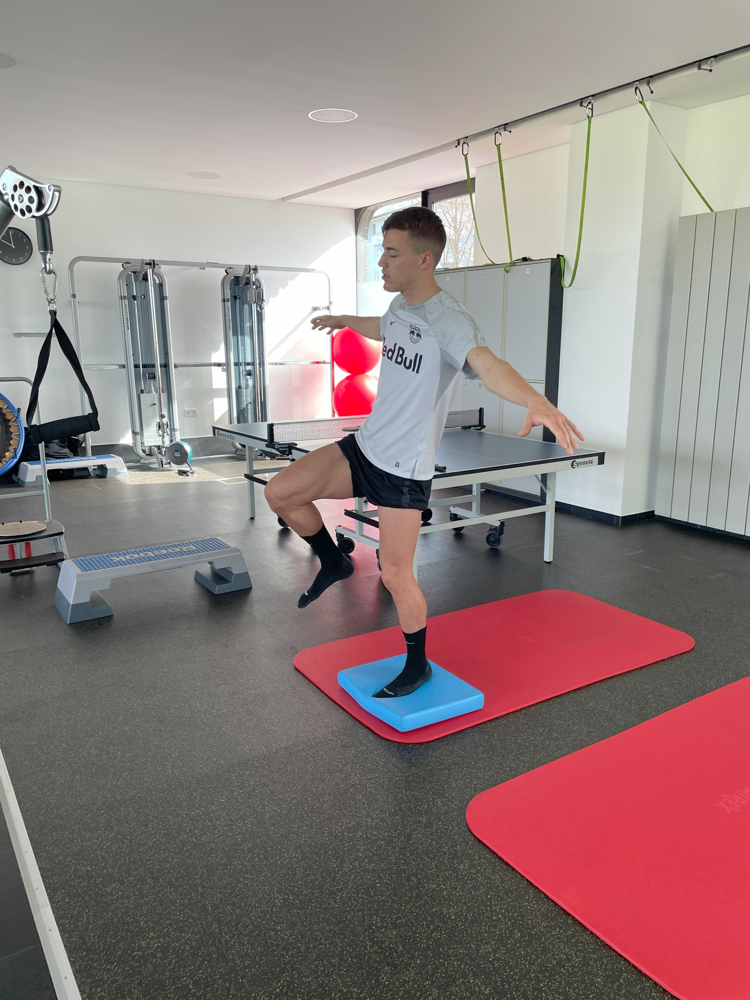
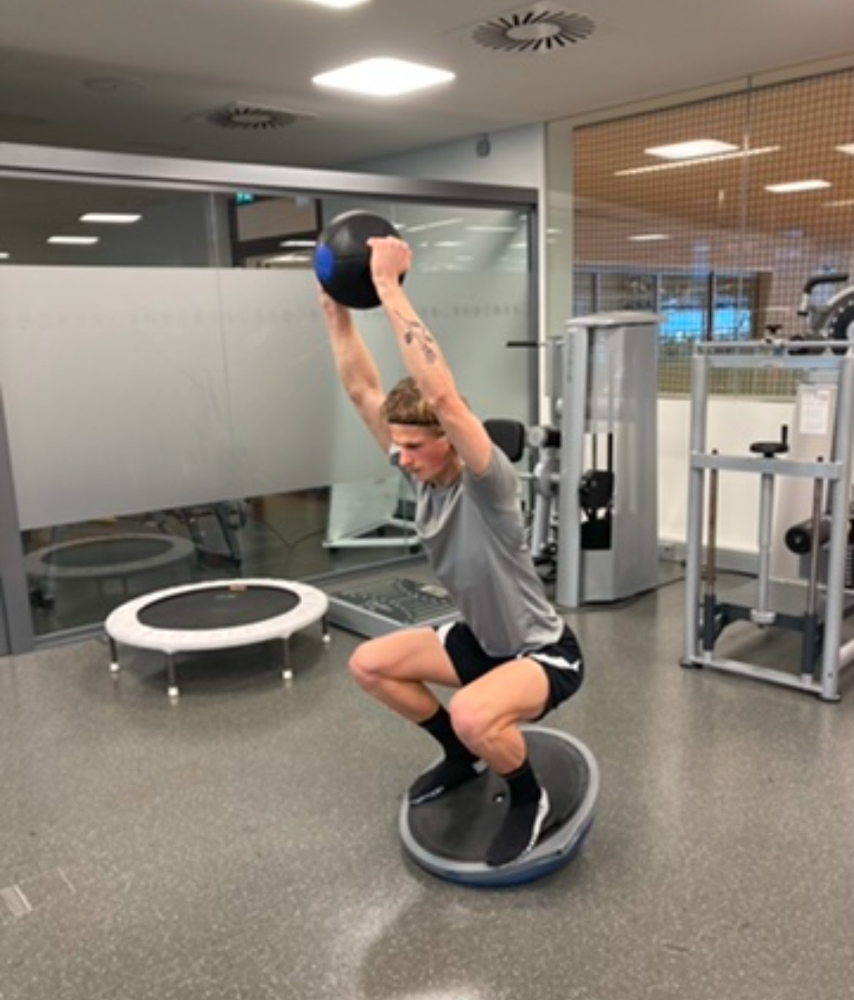
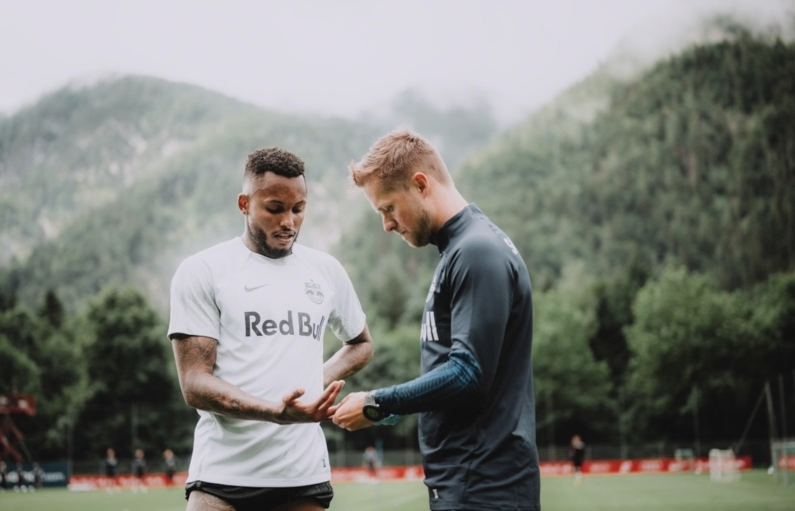
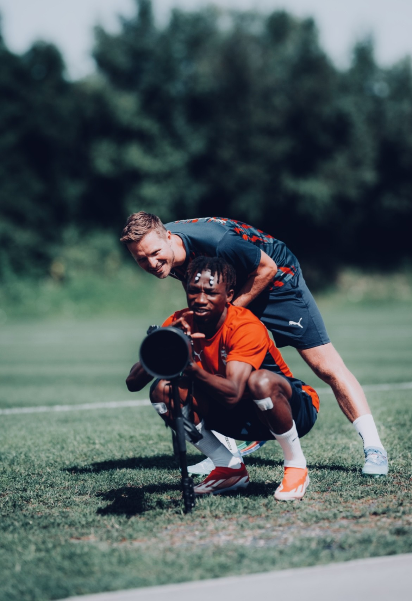

Die Erfolgsfaktoren für Therapie, Rehabilitation und Training.

Die Leidenschaft für Bewegung und Sport begleitet mich von klein auf und motiviert mich,
stets neue Methoden zur Therapie, Rehabilitation und
Leistungssteigerung zu erlernen.
Durch die breit gefächerte Ausbildung und berufliche Erfahrung konnte ich sowohl im
Hochleistungssport
als auch in der breiten Masse, Menschen in ihrem gesundheitlichen Fortschritt
unterstützen.
Besonders die Arbeit im Nachwuchs- und Profibereich des
FC Red Bull Salzburg hat mir wertvolle Einblicke
in die Bedürfnisse bei chronischen Beschwerden, Überlastungen,
Verletzungen
und Nachbehandlungen von Operationen gegeben.
- Dominik Urmann | Sportwissenschaftler -
Reha-Trainer Profis FC Red Bull Salzburg
: Erfahrung im täglichen Arbeiten mit Spitzensportlern um sie nach Verletzungen schnellst und bestmöglich für anstehende Wettkämpfe wie Champions League fit zu bekommen. Entwicklung von maßgeschneiderten und Evidenz geleiteten Reha- und Trainingsplänen.
Reha-Trainer Red Bull Akademie
: Als Präventions-, Athletik- und Fitnesstrainer betreute ich verletzte Nachwuchsspieler und arbeitete eng mit den medizinischen und sportlichen Abteilungen zusammen, um gezielt die Rehabilitation und Leistungssteigerung zu fördern.
Nachwuchs-Fußballtrainer FC Red Bull Salzburg
: Betreuung und Entwicklung von jungen Talenten im Jugendbereich.
Sportwissenschaftler bei Sportssupport
: Tägliche Arbeit mit einer breiten Zielgruppe, von jung bis alt, mit verschiedenen gesundheitlichen Zielen, wie z.B. Schmerzreduktion durch aktives Training, Fitnesssteigerung und Gewichtsverlust.
 









Als Reha-Trainer betreute Nationalteamspieler:
Alexander SCHLAGER, Oscar GLOUKH, Andreas ULMER, Maurits KJAERGAARD, Mads BIDSTRUP, Adam DAGHIM, Karim KONATÉ, Dorgeles NENE, Daouda GUINDO, Mamady DIAMBOU, Janis BLASWICH, Leandro MORGALLA, Aleksa TERZIC, Petar RATKOV
Nicolas SEIWALD, Benjamin SESKO, Karim ADEYEMI, Alexander PRASS, Junior ADAUM, Jusuf GAZIBEGOVIC
Strahinja PAVLOVIC, Noah OKAFOR, Flavius DANILIUC, Oumar SOLET, Ignace van der BREMPT
Philipp KÖHN, Amar DEDIC, Oumar Diakité
Luka SUCIC, David AFFENGRUBER